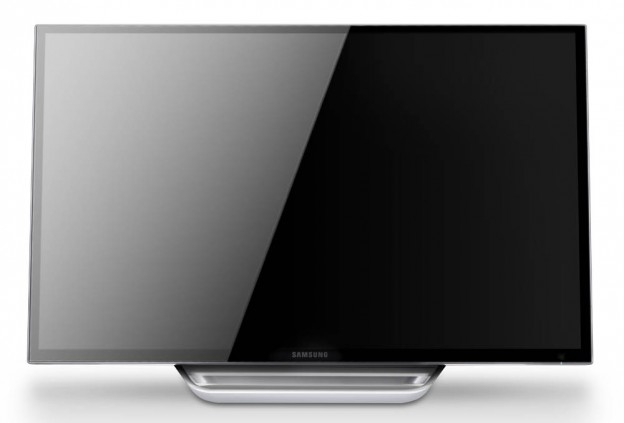
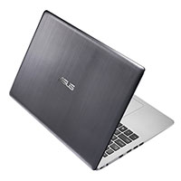
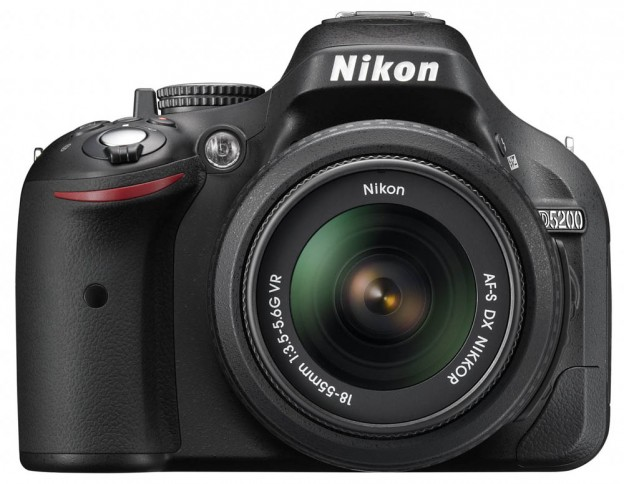
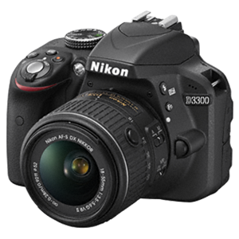
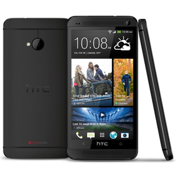
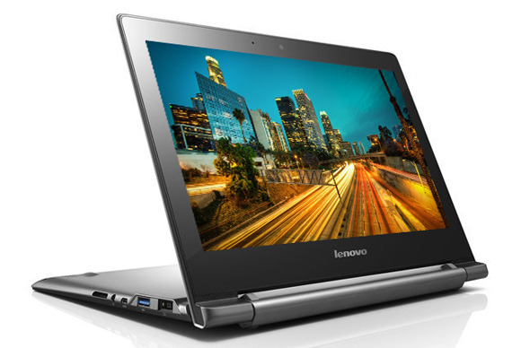
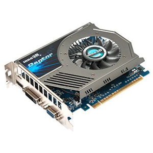

| § BYTE.MD |
§ PROMOTII |
§ CUM CUMPAR |
§ GARANTIA SI RESTUL |
§ SERVICE |
§ ANGAJARI |
§ CONTACT |
§ TOP DIN ULTIMA LUNA |
|
CALCULATOARE
|

Samsung isi extinde gama monitoarelor premium prin
lansarea a doua noi produse, care aduc calitatea
profesionala a imaginii la indemina specialistilor
si a consumatorilor. Seria inovativa 7 SC770 a
monitoarelor touch-screen este optimizata pentru
Windows 8, in timp ce seria 7 SC750 ofera un
design minimalist, ergonomic si o calitate inalta a
imaginii. Cele doua monitoare sunt premiate la CES
datorita inovatiilor pe care le incorporeaza. |
ASUS VivoBook S551LA
Intel Core i5 4200U 1.6GHz
Dual Core(Turbo to 2.6GHz)
8GB DDR3 1600MHz Memory
500GB 5400rpm Hard Drive
15.6" Touchscreen HD LED
Battery Life: Up to 6.0hrs
Weight: from 2.4kg |
|
TV,FOTO,AUDIO
|

Nikon a lansat in aceste zile un nou aparat foto
DSLR in format DX. Nikon D5200 ofera ecran rabatabil,
24,1 megapixeli, 39 de puncte de focalizare, filmare
Full HD si este dedicat fotografilor ce isi doresc un
plus de creativitate.Nikon D5200 va fi disponibil
incepind cu luna decembrie in trei culori: negru,
bronz si rosu. Pretul estimat este de 900 euro
(corpul) si 1.030 euro, in kit cu obiectivul 18 55 VR. |

NIKON D3300 KIT AF-S DX
LC-displei..3.0" (76 mm)
Tipul matricei..CMOS
Pixeli efectivi..24,2milioane
Obiectivul...Nikkor
Tipul cardului de memorie..SD
Greutate...410 g |
|
TELEFOANE
|

nVidia paseste mai departe pe drumul pe care si la propus,
spre creareade supercomputere, prin noul card grafic
Pascal.nVidia a inceput Conferinta GPU Technology cu
citeva surprize,prin prezentarea noii arhitecturi GPU
si a unui monstru de card grafic care va propulsa compania
in domeniul supercomputerelor.In sedinta de deschidere a
conferintei, Jen Hsun Huang, CEO al nVidiaCorp, a
prezentat noua generatie a arhitecturii GPU denumita
Pascal, care vor fi scoase pe piata in 2016. |

Comunicator HTC One 801s Black
Tipul..smartphone
Sistem de operare..Android,4.2
Camera din spate..4.1 MP
Diagonala ecranului..4,7"
cardului de memorie..microSD
Greutatea telefonului..144 g |
|
ACCESORII
|

Lenovo isi completeaza gama de portabile cu doua noi device-uri care
ruleaza sistemului de operare Chrome OS de la Google si care ofera
specificatii similare, dar se diferentiaza prin design.Lenovo N20
este un Chromebook ce respecta linia traditionala de design a
notebook-urilor in timp ce modelul N20p ofera touchscreen si este
inspirat din gama Yoga. |

Placa video GT640 2GB SDDR3
Producator chipset..nVidia
Procesor grafic.GeForce GT 640
Memoria video..2 GB |
| SPONSORI GENERALI |
|
|
|
|
|
|
|
|